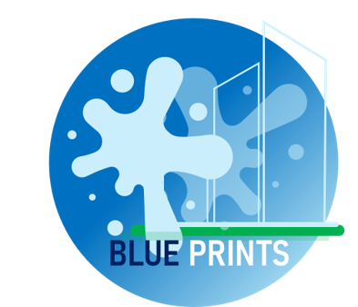
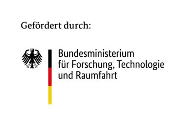

Neue Generation urbaner Wasserinfrastrukturen für resiliente Schwammstädte.
BLUEPRINTS entwickelt innovative, flexible und multifunktionale Wasserinfrastrukturen für die Stadt der Zukunft. Ziel ist eine intelligente und ressourcenschonende Bewirtschaftung von Wasser, angepasst an unterschiedliche Wasserqualitäten und Nutzungsanforderungen.
Modulare und vorgefertigte Infrastrukturbausteine ermöglichen die Sammlung, Speicherung, dezentrale Aufbereitung und bedarfsgerechte Bereitstellung von Wasser. Sie können unter anderem für Bewässerung, Kühlung und Wärmegewinnung eingesetzt werden und lassen sich schrittweise in bestehende Infrastrukturen integrieren.
Monatliche Einblicke in die Entwicklung und Umsetzung von BLUEPRINTS – von Oktober 2026 bis September 2027.